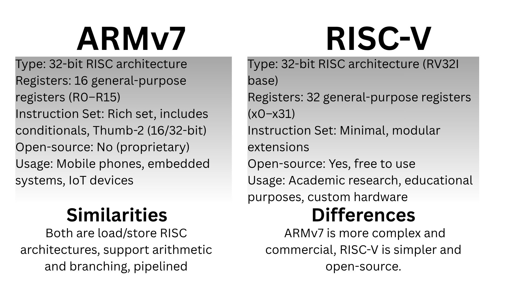
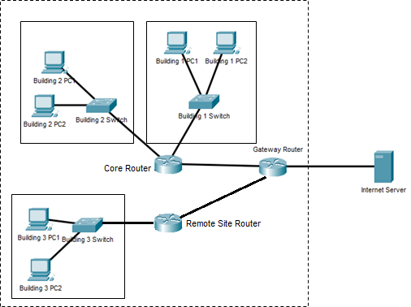
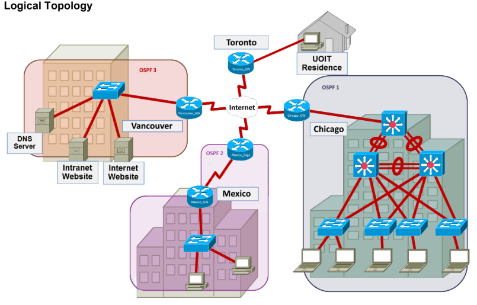

ARMv7 vs RISC-V architectures
This project compares ARMv7 and RISC-V architectures through hands-on assembly programming exercises. We implemented a calculator on ARMv7 and a Fibonacci generator on RISC-v, analyzing instruction sets and performance.
View Full ReportNetworking 1 - Corporate Network Design
Designed a corporate network with three buildings using IPv4 addressing and static routing. Implemented and tested the topology in Packet Tracer to confirm connectivity between hosts and internet access.
View Full ReportNetworking 2 - North American Crypto Topology
Created addressing and subnetting for a crypto mining company based across north america
View Full Report